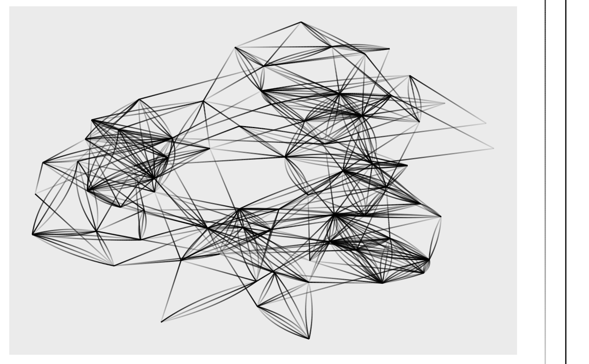

This guide is intended to show the direction of edges based on the aesthetics mapped to its progression, such as changing width, colour and opacity.
guide_edge_direction( title = waiver(), title.position = NULL, title.theme = NULL, title.hjust = NULL, title.vjust = NULL, arrow = TRUE, arrow.position = NULL, barwidth = NULL, barheight = NULL, nbin = 500, direction = NULL, default.unit = "line", reverse = FALSE, order = 0, override.aes = list(), ... )
| title | A character string or expression indicating a title of guide.
If |
|---|---|
| title.position | A character string indicating the position of a title. One of "top" (default for a vertical guide), "bottom", "left" (default for a horizontal guide), or "right." |
| title.theme | A theme object for rendering the title text. Usually the
object of |
| title.hjust | A number specifying horizontal justification of the title text. |
| title.vjust | A number specifying vertical justification of the title text. |
| arrow | Logical. Should an arrow be drawn to illustrate the direction.
Defaults to |
| arrow.position | The position of the arrow relative to the example edge. |
| barwidth | A numeric or a |
| barheight | A numeric or a |
| nbin | A numeric specifying the number of bins for drawing the colourbar. A smoother colourbar results from a larger value. |
| direction | A character string indicating the direction of the guide. One of "horizontal" or "vertical." |
| default.unit | A character string indicating |
| reverse | logical. If |
| order | positive integer less than 99 that specifies the order of this guide among multiple guides. This controls the order in which multiple guides are displayed, not the contents of the guide itself. If 0 (default), the order is determined by a secret algorithm. |
| override.aes | A list specifying aesthetic parameters of legend key. |
| ... | ignored. |
gr <- tidygraph::as_tbl_graph(highschool) ggraph(gr, layout = 'kk') + geom_edge_fan(aes(alpha = stat(index))) + guides(edge_alpha = guide_edge_direction())